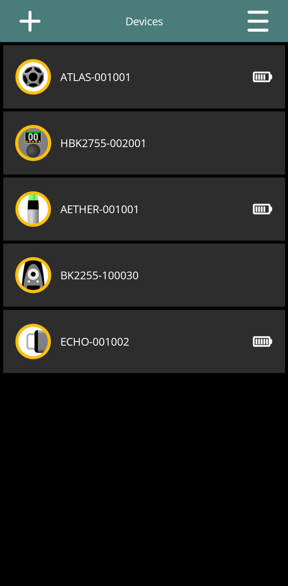
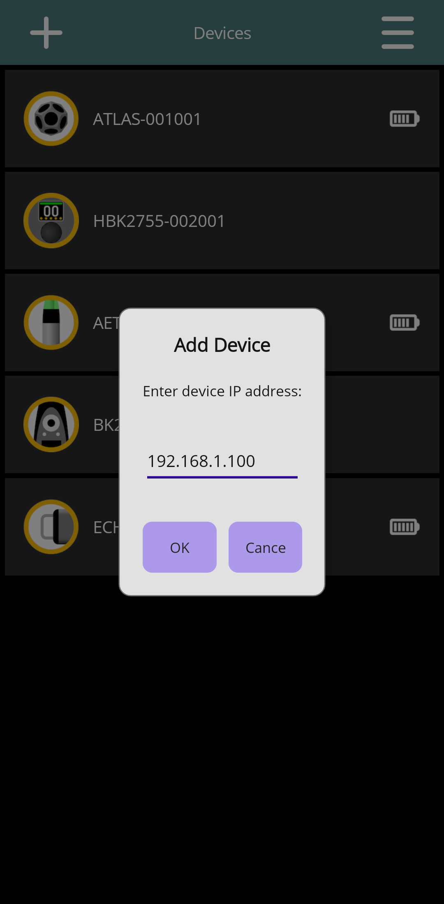
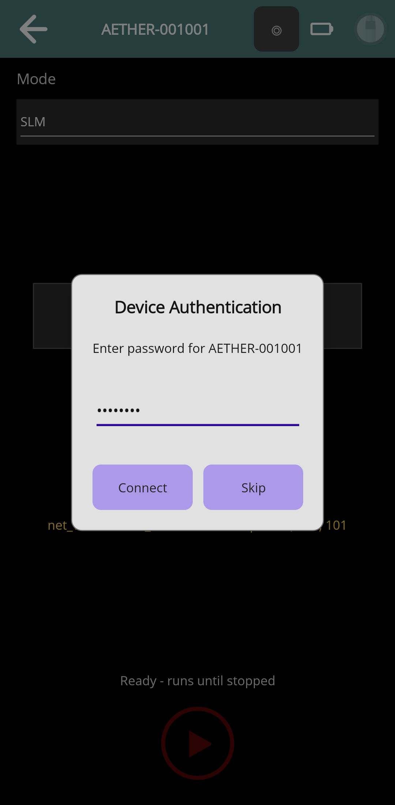

Connecting Devices
Draft for review: These DIRAC Field instructions and illustrations are being reviewed.
On this page
Prepare a local connection
DIRAC Field must be able to reach each device on the local network. Join a common Wi-Fi network, or connect the phone or tablet directly to a device hotspot. A hotspot provides local device access; it need not provide internet access. If the operating system reports no internet, keep the intended local connection.
For several sources and receivers, use a network on which all participants can communicate. Guest networks and access-point client isolation can prevent this even when the devices show a Wi-Fi connection. Configure the phone's network in the operating system; the app's device network editor changes the equipment's network.
Find and open a device
- Open Devices from the app menu. Discovery starts automatically.
- Find the device by its name and type. A card can also show its connection state and battery indication.
- Pull down on the list to refresh discovery and reachability.
- Tap the intended card to open its control page. Wait for connection and authentication to finish before using the controls.
A listed device is not necessarily authenticated or ready for measurement. Read the state shown by the app and the control page; do not rely on the device name alone.


Add by IP address
If automatic discovery does not find equipment whose address you know, tap the add button in the Devices app bar. In Add Device, enter the device's IP address and confirm. The app probes that address and reports whether it found supported equipment.
Manual addition does not repair an unreachable network or supply missing credentials. Confirm the current address on the device or network, particularly after changing between a hotspot and an existing network.


Authenticate
When the app asks to authenticate, enter the password for that device. DIRAC Field can retain device passwords and use them on later connections. If a saved password is rejected, enter the current device password when prompted.
For Aether, Echo and Atlas, the active device password is used both for remote control and the normal device hotspot. It is different from the password of an unrelated Wi-Fi access point. For HBK equipment, use the credentials configured for that equipment; do not assume the AE password arrangement applies.
Use App settings → Device Management to clear a stored password. Clearing it in DIRAC Field does not change the device password.


Identify after connecting
On an Aether control page, use Identify to briefly show its identification LED pattern when several Aethers are present. This requires an established device connection. It cannot identify an Aether while you are still preparing its initial connection.
After changing networks
- Expect the current connection to be interrupted when a device switches network or enters hotspot mode.
- Use the operating system's Wi-Fi settings to reconnect the phone or tablet to the appropriate network.
- Return to Devices, refresh if necessary, and open the device again.
- Check the device's current state before starting another measurement. Do not assume an interrupted operation completed.
The Network section in Device settings provides the app's equipment network controls. Aether offers Station and Hotspot modes. Physical recovery when normal network access is unavailable is described in its hardware guide.
Hide and restore a device
Swipe a device card to expose Forget and confirm the action. Forgotten devices are hidden until unblocked in App settings → Forgotten Devices. This is a local discovery-list preference; it is not a factory reset or a request to erase measurements from the equipment.
An Aether card marked Recovery mode — tap for recovery options opens recovery actions rather than the normal measurement controls. See Aether recovery in the app.